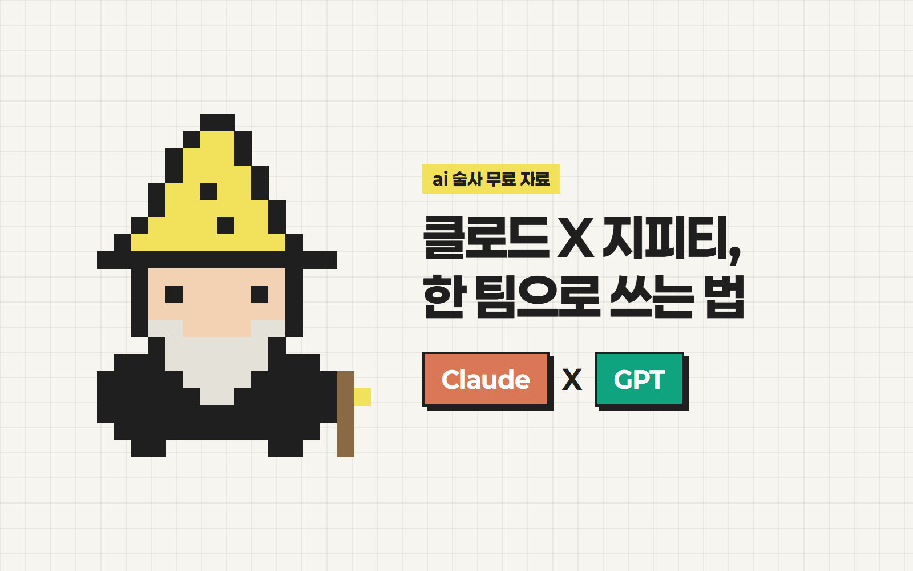

안녕하세요 ai 술사 성준입니다.
클로드 X 지피티,
한 팀으로 쓰는 법
클로드, 지피티, 둘 다 쓰는데
채팅창 왔다 갔다 하느라 불편하셨죠?
이제 클로드 안에서 GPT를 같이 쓸 수 있어요.
제가 초간단으로 알려드릴게요!
준비물
- 1Claude Code
- 2ChatGPT 계정 (무료 플랜도 가능)
- 3Node.js 18.18 이상 · nodejs.org
플러그인 설치
OpenAI가 직접 만든 클로드용 플러그인이에요.
- 1클로드 코드에 한 줄씩 입력해요.
/plugin marketplace add openai/codex-plugin-cc
/plugin install codex@openai-codex
/reload-plugins
/codex:setup
ChatGPT 로그인이 필요하면 /codex:setup 이 안내해줘요.
/codex:setup 에서 체크 뜨면 끝이에요.
이미지 맡기기
그림은 GPT가, 글자 검사는 클로드가 해요.
- 1레퍼런스 이미지를 클로드 코드에 붙여넣어요.
- 2아래 문장을 복사해서 같이 보내요.
이 레퍼런스 이미지처럼 썸네일 만들어줘. 그림은 GPT(Codex)한테 맡기고, 다 되면 한글 글자를 네가 직접 확인해서 틀린 줄만 다시 그려줘.
실제로 GPT가 '같이'를 '갈이'로 틀렸는데, 클로드가 잡아냈어요.
통째로 넘기기
막힌 작업을 GPT 쪽으로 넘겨요.
- 1뒤에 할 일을 적어서 입력해요.
/codex:rescue 이 버그 원인 찾아서 고쳐줘클로드가 하던 일을 GPT가 이어받아요.
검수 맡기기
클로드가 만든 결과물을 GPT가 한 번 더 봐요.
- 1작업이 끝나면 입력해요. (읽기 전용)
/codex:review
- 2더 깐깐하게 보고 싶으면 이걸로요.
/codex:adversarial-review
일부러 반박하면서 약점을 찾아줘요.
주의
- GPT 사용량은 ChatGPT의 Codex 한도에서 차감돼요.
- GPT가 만든 이미지의 한글 글자는 꼭 확인하세요.
이렇게 써먹어요
- 이미지가 필요하면 "GPT한테 맡겨줘"
- 막히면
/codex:rescue 할 일 - 끝나면
/codex:review - 중요한 건
/codex:adversarial-review
출처 · OpenAI 공식 저장소 github.com/openai/codex-plugin-cc
궁금하신 점은 DM으로 편하게 물어봐 주세요 🪄
From. ai 술사 | 성준
ai술사의 모든 꿀팁 확인하기!